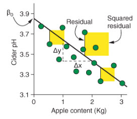
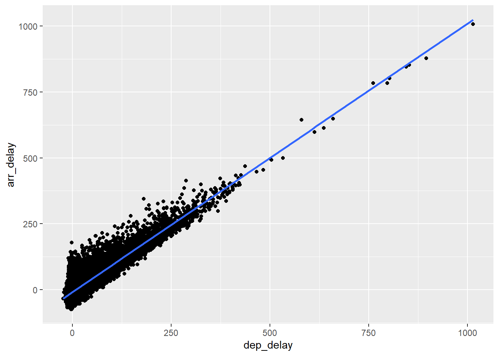
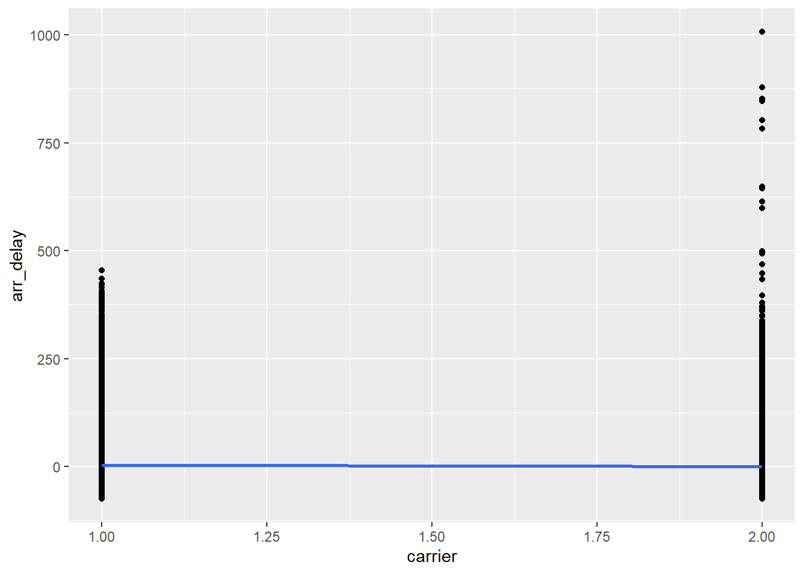
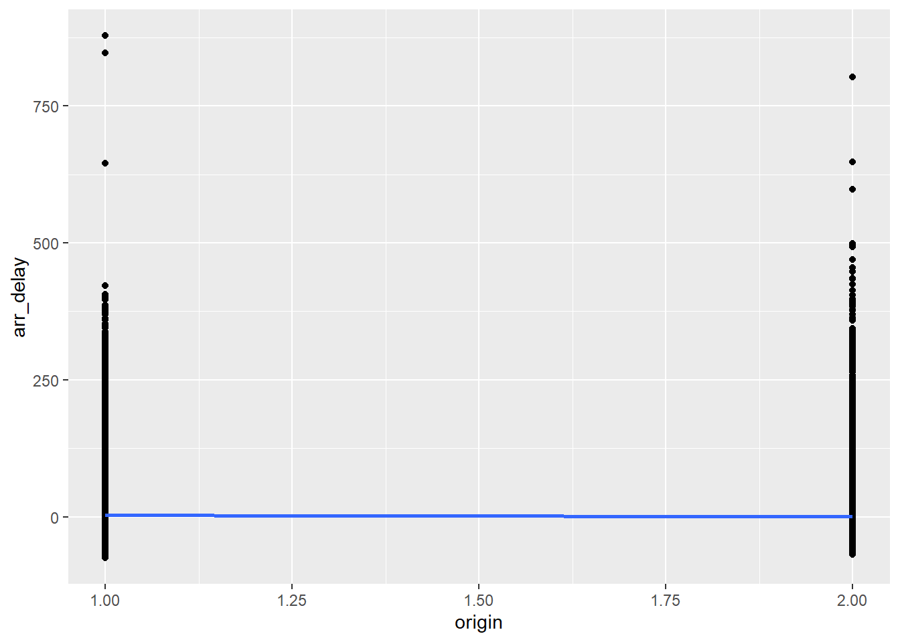
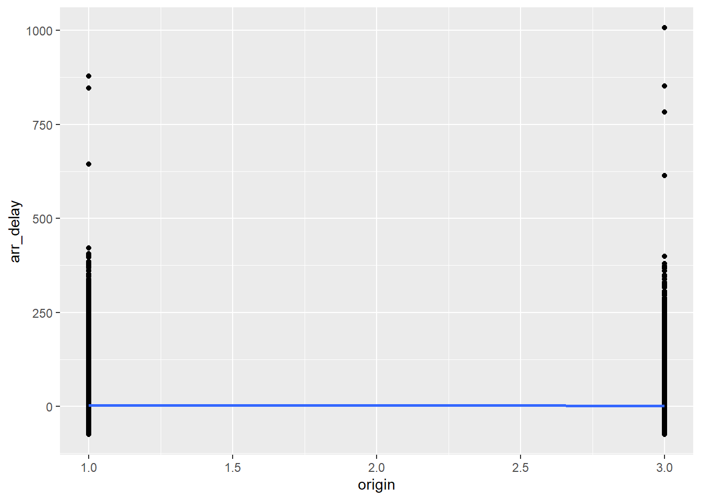

Chapter 11 - Linear regression
Introduction
In the previous chapter, we learned that regression is a method used to determine the relationship between a dependent variable (the variable we want to predict) and one or more independent variables (the predictors available to make the prediction). In the last chapter, we used logistic regression to predict a dichotomous variable. In this chapter we will learn how to use linear regression to predict a continuous dependent variable.
Linear regression
Linear regression uses a straight line to model the relationship between categorical or numerical predictors (independent variables) and a numerical predicted value (dependent variable). for a single predictor variable, the formula for the prediction is:
\[ y = intercept + slope × x \]
In statistical terms, the same formula is written like this:
\[ y = β_0 + βx \]
And if we have multiple independent variables, the formula becomes:
\[ y = β_0 + β_1x_1 + β_2x_2 .... β_nx_n \]
To determine how well the model fits the data (how well does x predict y. the linear model uses the square of the residuals (r2). The residuals are the difference between the predicted values and the real data, measured by the vertical distance between the line and the data points. Here’s a figure from Rhys (2020) to help you visualize this.

We can see in this figure that the intercept is where the line crosses the y-axis. The slope is calculate by dividing the difference in the predicted value of y by the difference in the value of x.
When working with categorical predictors, the intercept is the mean value of the base category and the slope is the difference between the means of each categories. Here’s an example taken again from Rhys (2020).

Example: predicting flight delays
Let’s use on-time data for all flights that departed NYC (i.e. JFK, LGA or EWR) in 2013 to try to build a model that will predicted delayed arrival. For this we will use the flights dataset included in the nycflights13 package. We will consider the following variables in our model:
origin: airport of departure (JFK, LGA, EWR)
carrier (we will only compare United Airlines - UA, and American Airlines - AA)
distance: flight distance in miles.
dep_delay: delay of departure in minutes
arr_delay: delay of arrival in minutes (this is our independent variable)
library(nycflights13)
data <- flights %>%
filter(carrier %in% c("UA", "AA")) %>%
select(origin, carrier, distance, dep_delay, arr_delay) %>%
mutate(origin = as_factor(origin),
carrier = as_factor(carrier)) %>%
drop_na()Fitting the regression line on data
Continuous dependent variables
data %>%
ggplot() +
aes(dep_delay, arr_delay) +
geom_point() +
geom_smooth(method="lm", se=F)
Categorical dependent variables
Carrier
In order to visualize the trend line with geom_smooth, we need to convert our factors into numerical variables.
data %>%
mutate(carrier = as.numeric(carrier)) %>%
ggplot() +
aes(carrier, arr_delay) +
geom_point() +
geom_smooth(method="lm")
Origin
Since origin has three levels (EWR, LGA and JFK), we want to plot choose a base level and compare each other level to this one. We first compare level 1 and 2…
data %>%
mutate(origin = as.numeric(origin)) %>%
filter(origin %in% c(1,2)) %>%
ggplot() +
aes(origin, arr_delay) +
geom_point() +
geom_smooth(method="lm")
… then we compare level 1 and 3.
data %>%
mutate(origin = as.numeric(origin)) %>%
filter(origin %in% c(1,3)) %>%
ggplot() +
aes(origin, arr_delay) +
geom_point() +
geom_smooth(method="lm")
Building the regression model
The process to build the model is exactly the same as the one we used for the logistic regression in the previous chapter. In fact, the process is simpler here because we do not need to convert the coefficient into odds ratios to make them easier to interpret. Let’s use the lm() function to build the model that predict delay at arrival based on the distance of the flight, the carrier and the origin (we’ll leave the delay of departure out of the model for now).
model <- lm(arr_delay ~ distance + carrier + origin,
data = data)
summary(model)##
## Call:
## lm(formula = arr_delay ~ distance + carrier + origin, data = data)
##
## Residuals:
## Min 1Q Median 3Q Max
## -77.86 -21.95 -9.71 7.89 1006.23
##
## Coefficients:
## Estimate Std. Error t value Pr(>|t|)
## (Intercept) 4.6299672 0.3577348 12.942 < 2e-16 ***
## distance -0.0007208 0.0002005 -3.596 0.000324 ***
## carrierAA -3.6699113 0.3907133 -9.393 < 2e-16 ***
## originLGA -0.7238011 0.4052653 -1.786 0.074104 .
## originJFK 1.6725192 0.4638028 3.606 0.000311 ***
## ---
## Signif. codes: 0 '***' 0.001 '**' 0.01 '*' 0.05 '.' 0.1 ' ' 1
##
## Residual standard error: 41.53 on 89724 degrees of freedom
## Multiple R-squared: 0.001708, Adjusted R-squared: 0.001663
## F-statistic: 38.37 on 4 and 89724 DF, p-value: < 2.2e-16The estimate coefficient represents the slope of the linear trend line for each predictor, so we can plug these values into our linear equation.
\[ ArrDelay = 4.63 - 0.00distance - 3.67AA - 0.73LGA + 1.67JFK \] We can see that most coefficient are statistically significant, which appears to indicate that they are good predictors, but let’s hold on for a minute before drawing too hasty conclusions. Look at the Adjusted R-squared (r2). It as a value of 0.001663, which is extremely small and indicate that the model explains less then 1% of the variance in delays. In other words, our model does not at all allow us to make predictions about delays.
Beware of too large sample
Statistically significant predictors in a model with low predictive value mostly occur when our data set or sample is too large. What’s a good sample size? a good rule of thumb is 10% of the total observations, with at least 10 observations per variable in the model but no more than 1000 observations in total. Let’s do this again with a sample of 500 observations.
model <- lm(arr_delay ~ distance + carrier + origin,
data = sample_n(data, 500))
summary(model)##
## Call:
## lm(formula = arr_delay ~ distance + carrier + origin, data = sample_n(data,
## 500))
##
## Residuals:
## Min 1Q Median 3Q Max
## -64.147 -20.125 -7.425 8.744 273.452
##
## Coefficients:
## Estimate Std. Error t value Pr(>|t|)
## (Intercept) 1.6728456 4.4819129 0.373 0.709
## distance -0.0002593 0.0024263 -0.107 0.915
## carrierAA -0.3259666 4.6360419 -0.070 0.944
## originLGA -0.6083138 4.9757982 -0.122 0.903
## originJFK 0.4414872 5.5709809 0.079 0.937
##
## Residual standard error: 37.7 on 495 degrees of freedom
## Multiple R-squared: 0.000101, Adjusted R-squared: -0.007979
## F-statistic: 0.0125 on 4 and 495 DF, p-value: 0.9997We see that the model still does a terrible job at predicting arrival delays, and that none of the predictors are statistically significant (at the p < 0.05 level).
Adding departure delay to the model
Finally, let’s ad the departure delay to the model. We’ve seen in the figure above in which we plotted the arrival delay against the departure delay, that our data points seemed to follow our trend line, and so we can expect that adding this predictor will improve our model.
model <- lm(arr_delay ~ distance + carrier + origin + dep_delay,
data = sample_n(data, 500))
summary(model)##
## Call:
## lm(formula = arr_delay ~ distance + carrier + origin + dep_delay,
## data = sample_n(data, 500))
##
## Residuals:
## Min 1Q Median 3Q Max
## -46.111 -11.929 -1.603 8.750 107.715
##
## Coefficients:
## Estimate Std. Error t value Pr(>|t|)
## (Intercept) -8.4144263 2.2970683 -3.663 0.000276 ***
## distance 0.0003586 0.0012746 0.281 0.778592
## carrierAA -2.1135025 2.4409320 -0.866 0.386988
## originLGA 2.8259148 2.5063664 1.127 0.260081
## originJFK 3.4073462 2.8414762 1.199 0.231046
## dep_delay 0.9685729 0.0246318 39.322 < 2e-16 ***
## ---
## Signif. codes: 0 '***' 0.001 '**' 0.01 '*' 0.05 '.' 0.1 ' ' 1
##
## Residual standard error: 19.15 on 494 degrees of freedom
## Multiple R-squared: 0.7585, Adjusted R-squared: 0.7561
## F-statistic: 310.4 on 5 and 494 DF, p-value: < 2.2e-16We can see that when we consider the delay in the departure, we can more accurately predict the delay at arrival, with about 80% of the variance explained by our model!
Homework
The homework for this week is to complete the last lab of the semester (lab 10).